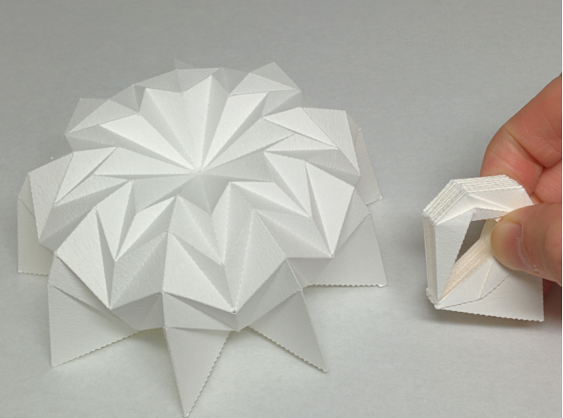

Profile
Name: Yan ZHAO

Affiliation: JIANGSU UNIVERSITY
School of Computer Science and Communication Engineering
Associate Professor
E-mail: yanzhao_cs (AT) ujs.edu.cn, chat_zhaoyan (AT) 163.com
Yan Zhao received his Ph.D. degree in Graduate School of Systems and Information Engineering from University of Tsukuba, Japan, in 2018. He received his M.E. degree from Iwate University, Japan, in 2014. Hereceived his B.E. degree from Northwest A&F University, China, in 2011. He is an associate professor at the School of Computer Science and Communication Engineering in Jiangsu University. His research interest includes computer graphics, human-computer interface, and computational origami.
News
- PaperRepo- Paper Repository for Collecting Research Papers (for reading paper everyday!), 2018.09.11
- Opening Site!, 2018.07.01
Research Interest
Computer graphics，Computational origami，Folding simulation and visualizationSelected Projects
 |
A Computational Design Method for Tucking Axisymmetric Origami Consisting of Triangular Facets(Symmetry)(Project) NEW |
 |
Design and motion analysis of axisymmetric 3D origami withgeneric six-crease bases(Computer Aided Geometric Design, 2018)(Project) |
 |
Approximating 3D Surfaces using Generalized Waterbomb Tessellations(Journal of Computational Design and Engineering, 2018)(Project) |
 |
InsTangible: A Tangible User Interface Combining Pop-up Cards with Conductive Ink Printing(International Conference on Entertainment Computing 2017)(Project) |
|  | Geometry of Axisymmetric 3D Origami Consisting of Triangular Facets(Journal for Geometry and Graphics, 2017)(Project) |
Publications
Journals:
- Yan Zhao*, Yuki Endo, Yoshihiro Kanamori, Jun Mitani: "A Computational Design Method for Tucking Axisymmetric Origami Consisting of Triangular Facets", Symmetry Accepted NEW.
- Yan Zhao, Yoshihiro Kanamori, Jun Mitani: "Geometry of Axisymmetric 3D Origami Consisting of Triangular Facets", Journal for Geometry and Graphics, Vol. 21, No. 1, pp. 107-118, 2017.
[Link]
[Preprint]
- Yan Zhao*, Yoshihiro Kanamori, Jun Mitani: "Design and Motion Analysis of Axisymmetric 3D Origami with Generic Six-crease Bases", Computer Aided Geometric Design, Vol. 59, No. Supplement C, pp. 86-97, 2018. ([DOI:https://doi.org/10.1016/j.cagd.2017.10.002]).
[Preprint]
- Yan Zhao*, Yuki Endo, Yoshihiro Kanamori, Jun Mitani: "Approximating 3D Surfaces using Generalized Waterbomb Tessellations", Journal of Computational Design and Engineering, Vol. 5, Issue 4, pp. 442-448, 2018. [DOI]
International:
- Yan Zhao*, Yuta Sugiura*, Mitsunori Tada, Jun Mitani: "InsTangible: A Tangible User Interface Combining Pop-up Cards with Conductive Ink Printing", Lecture Notes in Computer Science (International Conference on Entertainment Computing 2017, 72-80)
[DOI]
[Preprint]
[Preprint in Japanese]
[Video]
Grants:
- Monbukagakusho Scholarship, supported by Japanese Ministry of Education, Culture, Sports, Science and Technology, 2011.October-2014.September
- Monbukagakusho Scholarship, supported by Japanese Ministry of Education, Culture, Sports, Science and Technology, 2017.April-2018.March